Home / Past papers / MLP End Term / this paper
IIT M FOUNDATION DIPLOMA AN EXAM - 01 Sep 2024
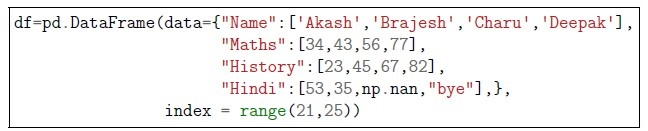
Consider the following common data and answer the subquestion: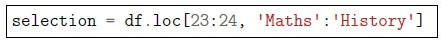
Consider the following code snippet: Which of the following will be equivalent to the above code snippet?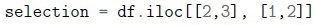
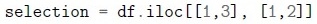
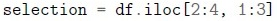
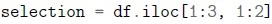
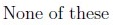
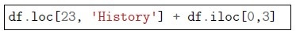
What is the output of the following code snippet: Enter -1, if you think the above statement will generate an error.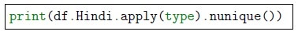
What is the output of the following code snippet: Enter -1, if you think the above statement will generate an error.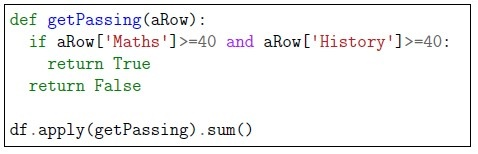
What is the output of the following code snippet: Enter -1, if you think the above statement will generate an error.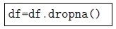
What is the output of the following code snippet: Choose correct options from following:- The number of rows will decrease in the dataset.
- The number of columns will decrease in the dataset.
- The number of columns and number of rows, both, will decrease in thedataset.
- There will be no change.
- Insufficient information.
- load_openml()
- read_openl()
- read_data()
- fetch_openml()
- load_data()
- load_csv()
- fetch_csv()
- In some columns which has values between 0 and 1.
- A column contains entity names such as ‘Chennai’, ‘CHENNAI’ and ‘MADRAS’.
- The data has only numbers in all the columns.
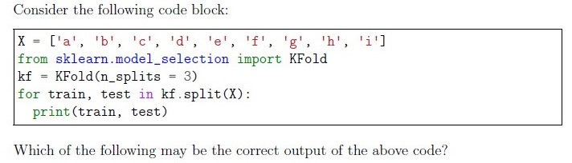
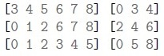
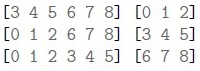
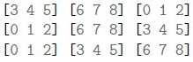
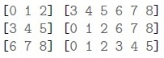
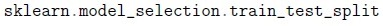
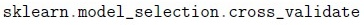
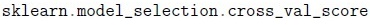
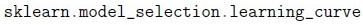
- Both statements are True
- Only statement 1 is True
- Only statement 2 is True
- Both statements are False
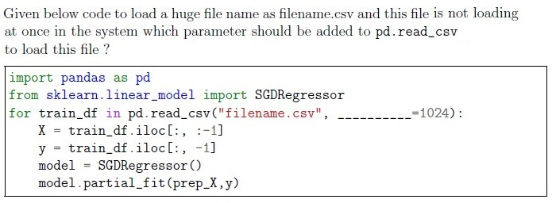
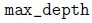
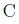
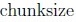
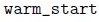
- It does not create hyperplanes as a decision boundary
- It will correctly classify all the data point if the data is linearly separable
- It is robust to outliers
- It is mostly used for clustering the data
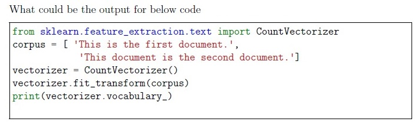
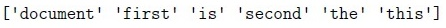
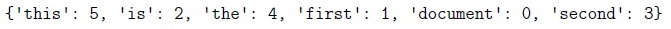
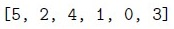
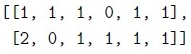
- Low bias, low variance
- High bias, low variance
- Low bias, high variance
- High bias, high variance
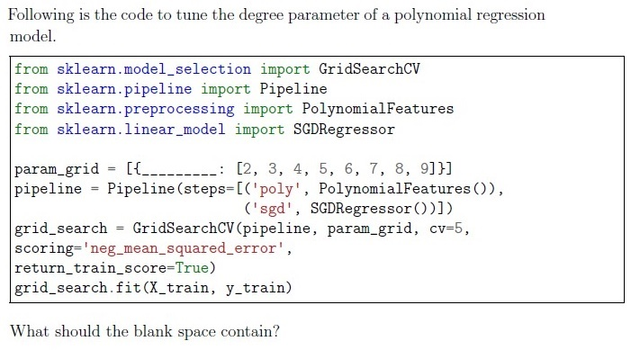
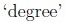
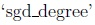
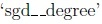
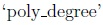
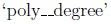
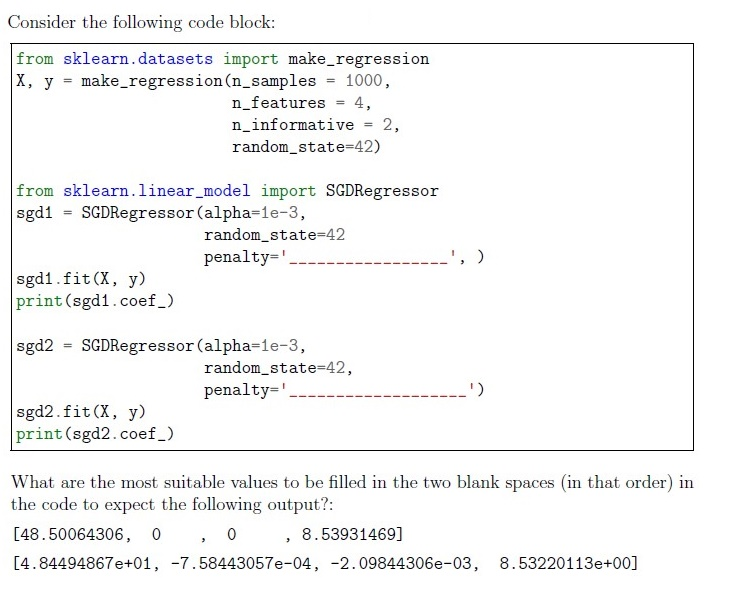
- ‘l1’, ‘l2’
- ‘l1’, None
- ‘l2’, ‘l1’
- ‘l2’, None
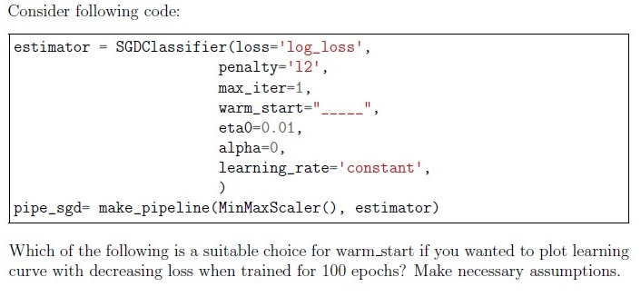
- True
- False
- Yes
- No
- None of these
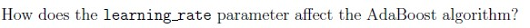
- It controls the number of weak learners.
- It shrinks the contribution of each classifier.
- It sets the weight of each weak learner.
- It adjusts the speed at which the model learns.
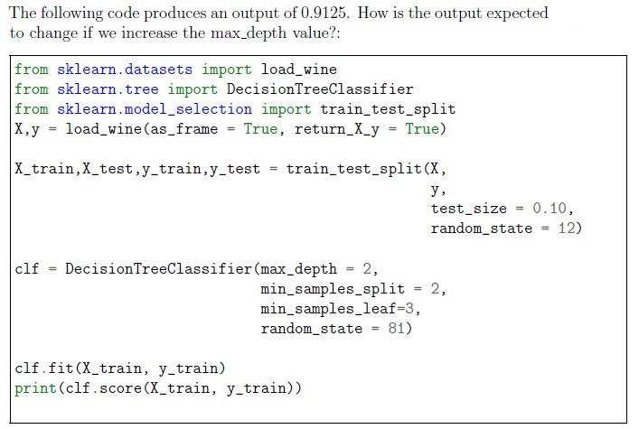
- Output score is likely to increase.
- Output score is likely to decrease.
- Output score may increase or decrease.
- Output score will remain the same.
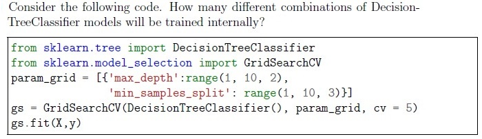
- 20
- 75
- 8
- 15
- 40

- The final predictions are based on the majority vote.
- The final predictions are based on the average of probabilities predicted byeach classifier.
- The final predictions are based on the weighted sum of the predictions.
- The final predictions are based on the classifier with the highest accuracy.

- The mean accuracy across all cross-validation folds.
- The mean precision across all cross-validation folds.
- The mean recall across all cross-validation folds.
- The mean F1 score across all cross-validation folds.

- Plotting the sum of the squared distances of samples to their closest clustercenter
- by Changing the distance metric for KMeans
- By initialising clustering centroids very far from each other
- All of these
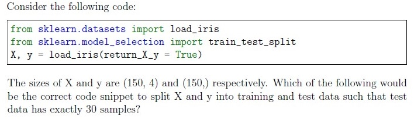
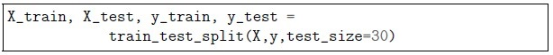
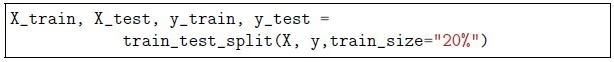
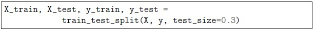
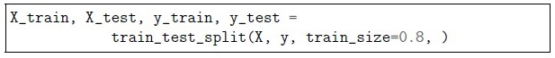
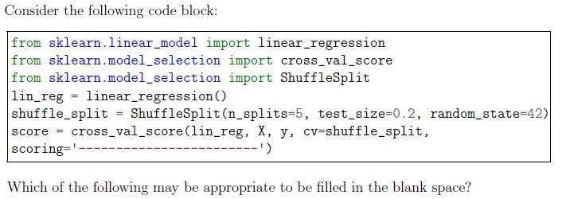
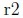
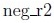
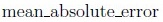
- Perceptron
- DecisionTreeClassifier
- KNeighborClassifier
- LogisticRegression
- SGDClassifier()
- MLPClassifier()
- NNClassifier()
- MLPRegressor()
- Remove all the minority classes
- Up-sample the minority classes
- Remove all the majority classes
- Down-sample the majority classes
- create synthetic samples to balance the classes
- It is primarily used for regression problems
- It is primarily used for classification problems
- Hyperparameter tuning is required
- Hyperparameter tuning is not required
- Only 5 neighbours in the range of some radius are used to compute the labelof a sample.
- All the neighbours in the range of some radius are used to compute the labelof a sample.
- It is sensitive to outliers.
- It is not sensitive to outliers.
- Data is continuously being generated
- Data is generated every month
- Whole data is generated and its in a huge file size
- For very small dataset

- The neural network contains 3 hidden layers with 5 neurons in each hiddenlayer
- The neural network contains 5 hidden layers with 3 neurons in each hiddenlayer
- The neural network contains 2 hidden layers with 3 neurons in the secondhidden layer
- The neural network contains 2 hidden layers with 5 neurons in the first hiddenlayer
- All of the given options are correct
- Number of samples at node N = 15. If it is split, it will result in 9 samples in theleft child node and 6 sample in the right child node.
- Number of samples at node N = 5. If it is split, it will result in 4 samples in theleft child node and 2 samples in the right child node.
- Number of samples at node N = 12. If it is split, it will result in 3 samples in theleft child node and 9 samples in the right child node.
- Number of samples at node N = 7. If it is split, it will result in 4 samples in theleft child node and 3 samples in the right child node.
Answer key
- Q1 (MSQ, 2 marks): A, C
- Q2 (SA, 2 marks): 120
- Q3 (SA, 2 marks): 3
- Q4 (SA, 2 marks): -1
- Q5 (MCQ, 2 marks): A
- Q6 (MCQ, 2 marks): D
- Q7 (MCQ, 2 marks): B
- Q8 (MCQ, 2 marks): B
- Q9 (MCQ, 2 marks): D
- Q10 (MCQ, 2 marks): A
- Q11 (MCQ, 2 marks): C
- Q12 (MCQ, 2 marks): B
- Q13 (MCQ, 2 marks): B
- Q14 (MCQ, 2 marks): C
- Q15 (MCQ, 3 marks): E
- Q16 (MCQ, 3 marks): A
- Q17 (MCQ, 3 marks): A
- Q18 (MCQ, 3 marks): B
- Q19 (MCQ, 4 marks): A
- Q20 (MCQ, 4 marks): D
- Q21 (MCQ, 4 marks): B
- Q22 (MCQ, 4 marks): A
- Q23 (MCQ, 4 marks): A
- Q24 (MSQ, 2 marks): A, D
- Q25 (MSQ, 2 marks): A, D
- Q26 (MSQ, 2 marks): B, C, D
- Q27 (MSQ, 2 marks): B, C
- Q28 (MSQ, 2 marks): B, D
- Q29 (MSQ, 3 marks): A, D
- Q30 (MSQ, 3 marks): B, D, E
- Q31 (MSQ, 3 marks): B, D
- Q32 (MSQ, 3 marks): B, D
- Q33 (MSQ, 3 marks): A, B, C
- Q34 (MSQ, 4 marks): C, D
- Q35 (MSQ, 5 marks): A, D
- Q36 (SA, 2 marks): 0.319 to 0.328
- Q37 (SA, 4 marks): 180
Concepts this paper tests
Auto-generated summary from the source site. Handy as a checklist; the lessons above explain each idea from scratch.
Here’s a structured summary of core topics, concepts, and equations for the Diploma Level: Machine Learning Practice (Computer-Based Exam), along with Mermaid knowledge graphs to visualize relationships.
1. Core Topics & Concepts
A. Pandas & Data Manipulation
DataFrame Operations:
- Indexing:
df.loc[](label-based),df.iloc[](position-based). - Slicing:
df.loc[23:24, 'Maths':'History']≡df.iloc[2:4, 1:3](Q2). - Handling missing data:
df.dropna()reduces rows (Q6). - Data types:
df.Hindi.apply(type).nunique()counts unique types (e.g.,int,float,str) (Q4).
- Indexing:
Chunked Reading:
pd.read_csv(..., chunksize=1024)for large files (Q12).
B. Scikit-Learn Workflow
Data Splitting:
train_test_split(test_size=30)for exact sample counts (Q25).ShuffleSplitfor randomized splits (Q26).
Cross-Validation:
KFold(n_splits=3)splits data into folds (Q9).cross_val_scoreevaluates models (Q26).
Learning Curves:
sklearn.model_selection.learning_curveanalyzes training/test errors vs. sample size (Q10).
Hyperparameter Tuning:
GridSearchCVexhaustively searches parameter grids (Q16, Q21).- Example:
param_grid = {'max_depth': [2, 3, 4]}.
C. Models & Algorithms
Linear Models:
SGDRegressor/Classifier:
loss='log_loss'(logistic regression),loss='hinge'(SVM),loss='perceptron'(Q30).penalty='l1','l2', or'elasticnet'for regularization (Q17).partial_fitfor online learning (Q34).
Polynomial Features:
PolynomialFeatures(degree=2)in pipelines (Q16).
Tree-Based Models:
Decision Trees:
- Prone to high variance/low bias (overfitting) (Q15).
- Hyperparameters:
max_depth,min_samples_split,min_samples_leaf(Q20, Q36).
Random Forest/Bagging:
BaggingClassifierwithDecisionTreeClassifieras base estimator (Q23).
Naive Bayes:
- Assumes feature independence; suffers with dependent features (Q11).
- No hyperparameter tuning typically required (Q32).
Neural Networks:
MLPClassifier/MLPRegressorfor multi-layer perceptrons (Q29, Q35).hidden_layer_sizes=(5,3)defines 2 hidden layers (5 and 3 neurons) (Q35).
Clustering:
K-Means:
- Inertia (sum of squared distances) → 0 when
n_clusters = n_samples(Q38). - Elbow method: Plot inertia vs.
n_clusters(Q24).
- Inertia (sum of squared distances) → 0 when
Ensemble Methods:
Voting Classifier:
voting='soft'averages predicted probabilities (Q22).
AdaBoost:
learning_ratecontrols weak learner contributions (Q19).
Radius Neighbors:
- Uses all neighbors within a radius (unlike KNN’s fixed
k) (Q33).
- Uses all neighbors within a radius (unlike KNN’s fixed
Imbalanced Data:
- Strategies: Upsampling minority, downsampling majority, or synthetic samples (SMOTE) (Q31).
D. Evaluation Metrics
Regression:
mean_absolute_error,neg_mean_squared_error(Q26, Q37).
Classification:
- Accuracy, precision, recall, F1 (Q22).
Cross-Validation:
cross_val_score(scoring='neg_r2')for regression (Q26).
E. Text Processing
CountVectorizer:
vocabulary_maps terms to indices (Q14).- Example:
{'this': 4, 'is': 2, ...}.
F. Model-Specific Notes
SVM:
- Hard-margin SVM classifies all points correctly if data is linearly separable (Q13).
Perceptron:
SGDClassifier(loss='perceptron')is its stochastic version (Q30).
Logistic Regression:
SGDClassifier(loss='log_loss')(Q30).
2. Key Equations (Math-Focused)
A. Linear Models
- SGD Update Rule:
- : Learning rate (
eta0inSGDRegressor). - : Loss function (e.g., MSE for regression, log loss for classification).
Regularization (L1/L2):
- L1 (Lasso):
- L2 (Ridge):
- Elastic Net:
B. Decision Trees
- Gini Impurity:
- Entropy:
C. K-Means
- Inertia (Objective Function):
- : Cluster centroids.
- Minimized when (inertia = 0).
D. Evaluation Metrics
- Mean Absolute Error (MAE):
- R² Score:
E. Naive Bayes
- Conditional Probability (Gaussian NB):
Graph 2: Model Relationships
Graph 3: Data Preprocessing
Graph 4: Model Evaluation
Graph 5: Hyperparameter Tuning
4. Exam Tips
Pandas:
locvs.iloc:locuses labels,ilocuses integer positions.dropna()affects rows by default (not columns unlessaxis=1).
Scikit-Learn:
- Pipelines: Use
make_pipelineto chain transforms and estimators. - Partial Fit: For online learning (e.g.,
SGDRegressor.partial_fit). - Voting:
voting='soft'averages probabilities;'hard'uses majority vote.
- Pipelines: Use
Math:
- Know when inertia = 0 in K-Means (
n_clusters = n_samples). - Understand how
learning_rateaffects AdaBoost (shrinks contributions).
- Know when inertia = 0 in K-Means (
Code Snippets:
- Memorize common patterns (e.g.,
KFoldoutput,CountVectorizervocabulary).
- Memorize common patterns (e.g.,
Hyperparameters:
max_depth,n_neighbors,degreeare hyperparameters (notintercept_).
Good luck! Focus on practical coding patterns, math behind algorithms, and scikit-learn’s API.